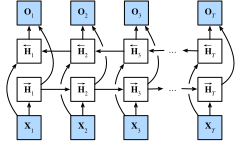

10.4. 双向循环神经网络¶
到目前为止，我们一直使用的序列学习任务示例是语言建模， 即在给定序列中所有先前词元的条件下预测下一个词元。 在这种情况下，我们只希望以左侧上下文为条件， 因此标准 RNN 的单向链式结构似乎是合适的。 然而，在许多其他序列学习任务中， 每个时间步的预测完全可以同时以左侧和右侧上下文为条件。 例如，考虑词性检测。 在判断给定单词的词性时， 我们为什么不应该把两个方向的上下文都考虑进来呢？
另一项常见的任务——它常常作为预训练练习， 在针对实际感兴趣的任务微调模型之前很有用——是 在文本文档中随机掩盖一些词元， 然后训练一个序列模型来预测缺失词元的值。 请注意，根据空白处之后的内容不同， 缺失词元的可能值会发生巨大变化：
我
___。我
___饿了。我
___饿了，而且我能吃下半头猪。
在第一句中，“happy”似乎是一个可能的候选。 在第二句中，“not”和“very”这两个词似乎都说得通， 但“not”似乎与第三句不相容。
幸运的是，有一种简单的技术可以把任何单向 RNN 转换为双向 RNN (Schuster and Paliwal, 1997)。 我们只需要实现两个单向 RNN 层， 让它们朝相反方向链接在一起并作用于同一输入（图10.4.1）。 对于第一个 RNN 层， 第一个输入是 \(\mathbf{x}_1\)， 最后一个输入是 \(\mathbf{x}_T\)； 而对于第二个 RNN 层， 第一个输入是 \(\mathbf{x}_T\)， 最后一个输入是 \(\mathbf{x}_1\)。 要得到这个双向 RNN 层的输出， 我们只需把两个底层单向 RNN 层的对应输出连结在一起。

图10.4.1 双向 RNN 的架构。¶
形式化地说，对于任意时间步 \(t\)， 我们考虑一个小批量输入 \(\mathbf{X}_t \in \mathbb{R}^{n \times d}\) （样例数 \(=n\)；每个样例的输入数 \(=d\)）， 并设隐藏层激活函数为 \(\phi\)。 在双向架构中，该时间步的前向和反向隐藏状态 分别为 \(\overrightarrow{\mathbf{H}}_t \in \mathbb{R}^{n \times h}\) 和 \(\overleftarrow{\mathbf{H}}_t \in \mathbb{R}^{n \times h}\)， 其中 \(h\) 是隐藏单元数。 前向和反向隐藏状态的更新如下：
其中权重 \(\mathbf{W}_{\textrm{xh}}^{(f)} \in \mathbb{R}^{d \times h}, \mathbf{W}_{\textrm{hh}}^{(f)} \in \mathbb{R}^{h \times h}, \mathbf{W}_{\textrm{xh}}^{(b)} \in \mathbb{R}^{d \times h}, \textrm{ and } \mathbf{W}_{\textrm{hh}}^{(b)} \in \mathbb{R}^{h \times h}\)， 以及偏置 \(\mathbf{b}_\textrm{h}^{(f)} \in \mathbb{R}^{1 \times h}\) 和 \(\mathbf{b}_\textrm{h}^{(b)} \in \mathbb{R}^{1 \times h}\) 都是模型参数。
接下来，我们把前向和反向隐藏状态 \(\overrightarrow{\mathbf{H}}_t\) 和 \(\overleftarrow{\mathbf{H}}_t\) 连结起来， 得到隐藏状态 \(\mathbf{H}_t \in \mathbb{R}^{n \times 2h}\)，用于输入到输出层。 在具有多个隐藏层的深度双向 RNN 中， 这种信息会作为输入传递给下一个双向层。 最后，输出层计算输出 \(\mathbf{O}_t \in \mathbb{R}^{n \times q}\)（输出数 \(=q\)）：
这里，权重矩阵 \(\mathbf{W}_{\textrm{hq}} \in \mathbb{R}^{2h \times q}\) 和偏置 \(\mathbf{b}_\textrm{q} \in \mathbb{R}^{1 \times q}\) 是输出层的模型参数。 尽管从技术上来说，两个方向可以有不同数量的隐藏单元， 但在实践中很少这样设计。 现在我们来演示双向 RNN 的一个简单实现。
import torch
from torch import nn
from d2l import torch as d2l
from mxnet import np, npx
from mxnet.gluon import rnn
from d2l import mxnet as d2l
npx.set_np()
from jax import numpy as jnp
from d2l import jax as d2l
import tensorflow as tf
from d2l import tensorflow as d2l
10.4.1. 从零开始实现¶
如果我们想从零实现一个双向 RNN， 可以包含两个各自拥有可学习参数的单向
RNNScratch 实例。
class BiRNNScratch(d2l.Module):
def __init__(self, num_inputs, num_hiddens, sigma=0.01):
super().__init__()
self.save_hyperparameters()
self.f_rnn = d2l.RNNScratch(num_inputs, num_hiddens, sigma)
self.b_rnn = d2l.RNNScratch(num_inputs, num_hiddens, sigma)
self.num_hiddens *= 2 # The output dimension will be doubled
class BiRNNScratch(d2l.Module):
def __init__(self, num_inputs, num_hiddens, sigma=0.01):
super().__init__()
self.save_hyperparameters()
self.f_rnn = d2l.RNNScratch(num_inputs, num_hiddens, sigma)
self.b_rnn = d2l.RNNScratch(num_inputs, num_hiddens, sigma)
self.num_hiddens *= 2 # The output dimension will be doubled
class BiRNNScratch(d2l.Module):
num_inputs: int
num_hiddens: int
sigma: float = 0.01
def setup(self):
self.f_rnn = d2l.RNNScratch(num_inputs, num_hiddens, sigma)
self.b_rnn = d2l.RNNScratch(num_inputs, num_hiddens, sigma)
self.num_hiddens *= 2 # The output dimension will be doubled
class BiRNNScratch(d2l.Module):
def __init__(self, num_inputs, num_hiddens, sigma=0.01):
super().__init__()
self.save_hyperparameters()
self.f_rnn = d2l.RNNScratch(num_inputs, num_hiddens, sigma)
self.b_rnn = d2l.RNNScratch(num_inputs, num_hiddens, sigma)
self.num_hiddens *= 2 # The output dimension will be doubled
前向 RNN 和反向 RNN 的状态分别更新， 而这两个 RNN 的输出则连结在一起。
@d2l.add_to_class(BiRNNScratch)
def forward(self, inputs, Hs=None):
f_H, b_H = Hs if Hs is not None else (None, None)
f_outputs, f_H = self.f_rnn(inputs, f_H)
b_outputs, b_H = self.b_rnn(reversed(inputs), b_H)
outputs = [torch.cat((f, b), -1) for f, b in zip(
f_outputs, reversed(b_outputs))]
return outputs, (f_H, b_H)
@d2l.add_to_class(BiRNNScratch)
def forward(self, inputs, Hs=None):
f_H, b_H = Hs if Hs is not None else (None, None)
f_outputs, f_H = self.f_rnn(inputs, f_H)
b_outputs, b_H = self.b_rnn(reversed(inputs), b_H)
outputs = [np.concatenate((f, b), -1) for f, b in zip(
f_outputs, reversed(b_outputs))]
return outputs, (f_H, b_H)
@d2l.add_to_class(BiRNNScratch)
def forward(self, inputs, Hs=None):
f_H, b_H = Hs if Hs is not None else (None, None)
f_outputs, f_H = self.f_rnn(inputs, f_H)
b_outputs, b_H = self.b_rnn(reversed(inputs), b_H)
outputs = [jnp.concatenate((f, b), -1) for f, b in zip(
f_outputs, reversed(b_outputs))]
return outputs, (f_H, b_H)
@d2l.add_to_class(BiRNNScratch)
def forward(self, inputs, Hs=None):
f_H, b_H = Hs if Hs is not None else (None, None)
f_outputs, f_H = self.f_rnn(inputs, f_H)
b_outputs, b_H = self.b_rnn(reversed(inputs), b_H)
outputs = [tf.concat((f, b), -1) for f, b in zip(
f_outputs, reversed(b_outputs))]
return outputs, (f_H, b_H)
10.4.2. 简洁实现¶
使用高级 API，我们可以更简洁地实现双向 RNN。 这里我们以 GRU 模型为例。
class BiGRU(d2l.RNN):
def __init__(self, num_inputs, num_hiddens):
d2l.Module.__init__(self)
self.save_hyperparameters()
self.rnn = nn.GRU(num_inputs, num_hiddens, bidirectional=True)
self.num_hiddens *= 2
使用高级 API，我们可以更简洁地实现双向 RNN。 这里我们以 GRU 模型为例。
class BiGRU(d2l.RNN):
def __init__(self, num_inputs, num_hiddens):
d2l.Module.__init__(self)
self.save_hyperparameters()
self.rnn = rnn.GRU(num_hiddens, bidirectional=True)
self.num_hiddens *= 2
Flax API 不提供 RNN 层，因此没有 bidirectional 参数的概念。
如果需要双向层，就需要像从零实现中那样手动反转输入。
使用高级 API，我们可以更简洁地实现双向 RNN。 这里我们以 GRU 模型为例。
10.4.3. 小结¶
在双向 RNN 中，每个时间步的隐藏状态同时由当前时间步之前和之后的数据决定。 双向 RNN 主要用于序列编码以及在双向上下文下估计观测值。 由于梯度链很长，双向 RNN 的训练代价非常高。
10.4.4. 练习¶
如果不同方向使用不同数量的隐藏单元，\(\mathbf{H}_t\) 的形状会如何变化？
设计一个具有多个隐藏层的双向 RNN。
多义词在自然语言中很常见。例如，“bank”这个词在“i went to the bank to deposit cash”和“i went to the bank to sit down”两种语境中含义不同。我们如何设计一个神经网络模型，使得给定一个上下文序列和一个单词时，返回该单词在正确语境中的向量表示？处理多义词时更偏好哪类神经网络架构？